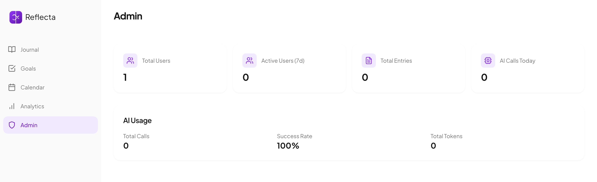

Projekt
Reflecta
Dialogliste, Informationsarchitektur, Swimlane-Ablaufdiagramm und annotierter Wireframe des Admin-Dashboards der Reflecta-Plattform
Dieses Dokument spezifiziert den Admin-Bereich von Reflecta. Er ist ausschließlich für Nutzer mit is_admin = true zugänglich und stellt Betriebskennzahlen der Plattform dar. Das Fachkonzept beschreibt den einzigen Dialog des Bereichs, dessen Informationsarchitektur, den Ablauffluss sowie einen annotierten Wireframe.
Der Admin-Bereich ist nur für angemeldete Nutzer mit gesetztem is_admin-Flag zugänglich. Er besteht aus einer einzigen Ansicht und bietet keine weiteren Tabs oder Sub-Dialoge.
GET /admin/stats mit JWT-geschütztem Zugriff.ADM-00 kennzeichnet den einzigen Dialog des Admin-Bereichs. Die ID wird in der Dialogliste, im IA-Baum, im Swimlane-Diagramm und im Wireframe konsistent verwendet.
Gated (Admin) kennzeichnet Dialoge, die ein gültiges JWT mit is_admin = true voraussetzen. Alle ADM-Dialoge tragen diese Stufe — andernfalls liefert das Backend HTTP 403.
Schriftfamilie ist Plus Jakarta Sans. Display-Gewichte liegen bei 700–800, Fließtext bei 400, Beschriftungen bei 500–600.
Das Admin-Tab in der Sidebar ist ausschließlich gerendert, wenn der authentifizierte Nutzer is_admin === true zurückgibt. Die Route selbst ist nicht direkt ansteuerbar; das Frontend prüft den Flag clientseitig, das Backend serverseitig via get_current_admin-Dependency.
Der Admin-Bereich besteht aus einer einzigen Ansicht. Der Dialog-Bezeichner, sein Typ und seine Auslöser sind nachfolgend aufgeführt.
| Dialog-ID | Name | Typ | Auslöser | Beschreibung |
|---|---|---|---|---|
| ADM-00 | Stats Overview Gated · Admin |
Standard-Ansicht | Navigation → Admin | Gesamtübersicht: Nutzer, Einträge, AI-Calls, Tokens |
useEffect und zeigt die Stats aus GET /admin/stats. Es gibt keine weiteren Tabs oder Dialoge.
| Element-ID | Name | Beschreibung |
|---|---|---|
| ADM-00.1 | StatCard — Total Users | Gesamtzahl aller registrierten Nutzer aus stats.total_users |
| ADM-00.2 | StatCard — Active Users (7d) | Nutzer mit mindestens einem Eintrag in den letzten 7 Tagen aus stats.active_users_7d |
| ADM-00.3 | StatCard — Total Entries | Gesamtzahl aller Journaleinträge über alle Nutzer aus stats.total_entries |
| ADM-00.4 | StatCard — AI Calls Today | Anzahl der KI-Aufrufe am heutigen Tag aus stats.ai_calls_today |
| ADM-00.5 | AI Usage Card | Aggregierte KI-Nutzung: Total Calls, Success Rate (%), Total Tokens |
Der Admin-Bereich ist eine einzelne, zustandslos gerenderte Seite innerhalb der AuthenticatedApp. Die Hierarchie des Komponentenbaums, der API-Endpunkt und das zugrundeliegende Datenmodell sind nachfolgend dokumentiert.
App.js └── AuthenticatedApp [activeTab state] ├── Sidebar [journal | goals | calendar | analytics | admin] ├── Header └── AdminDashboard ← nur wenn activeTab === "admin" │ Lädt via useEffect → getAdminStats() → GET /admin/stats │ ├── StatCard: Total Users stats.total_users ├── StatCard: Active Users (7d) stats.active_users_7d ├── StatCard: Total Entries stats.total_entries ├── StatCard: AI Calls Today stats.ai_calls_today └── AI Usage Card ├── Total Calls stats.total_ai_calls ├── Success Rate (%) stats.ai_success_rate └── Total Tokens stats.ai_tokens_total
| Methode | Endpunkt | Antwort-Felder | Schutz |
|---|---|---|---|
| GET | /admin/stats |
total_users, active_users_7d, total_entries, total_ai_calls, ai_success_rate, ai_calls_today, ai_tokens_total | is_admin |
get_current_admin-Dependency. FastAPI prüft das JWT-Token und stellt sicher, dass user.is_admin == True — andernfalls HTTP 403.
| Tabelle | Relevante Felder | Genutzt für |
|---|---|---|
| users | id, is_admin, created_at | total_users |
| journal_entries | id, user_id, created_at | total_entries, active_users_7d |
| ai_usage_logs | id, success, input_tokens, output_tokens, created_at | total_ai_calls, ai_calls_today, ai_success_rate, ai_tokens_total |
Zwei Flows dokumentieren den Admin-Datenpfad vollständig: Flow A zeigt den Erfolgsfall (Stats laden), Flow B den Fehlerfall (fehlende Admin-Rechte). Drei Lanes: Admin-Browser, React-Frontend, FastAPI + SQLite.
Erfolgsfall: Admin klickt auf „Admin“ in der Sidebar, das Dashboard mountet, lädt via useEffect die Stats und rendert die StatCards.
Fehlerfall: Ein Nutzer ohne Admin-Rechte versucht, den Endpunkt aufzurufen. FastAPI antwortet mit HTTP 403. Das Frontend fängt den Fehler ab und zeigt eine Fehlermeldung; der Admin-Tab ist im Normalfall gar nicht sichtbar.
FastAPI gibt 403 zurück, wenn user.is_admin == False. Im Normalfall ist der Admin-Tab im Frontend für solche Nutzer nicht gerendert; dieser Fall tritt nur bei direktem API-Zugriff ein.
Fehlendes oder abgelaufenes JWT führt zu 401. Das React-Frontend leitet den Nutzer zurück zur Anmeldeseite (Auth-Dialog D-08).
Einzige Ansicht des Admin-Bereichs. Vier StatCards zeigen die wichtigsten Plattformkennzahlen; eine AI-Usage-Card fasst die KI-Nutzungsstatistik zusammen. Alle Werte werden beim ersten Rendern über GET /admin/stats geladen.
